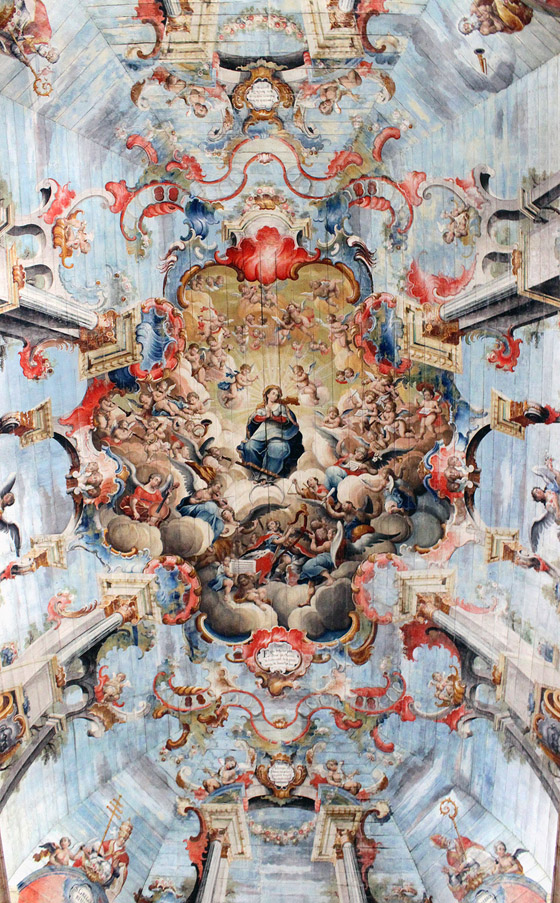

Historia
das
Cores

Introdução
As cores acompanham a humanidade desde a pré-história.
Os primeiros humanos utilizavam pigmentos naturais feitos de terra, carvão e minerais
para criar pinturas rupestres e representar caça, espiritualidade e sobrevivência.
No Egito Antigo, as cores ganharam significados sagrados:
azul representava eternidade,
verde simbolizava vida,
dourado representava os deuses.
Na Grécia Antiga e no Império Romano, certas cores mostravam riqueza e poder, como o
roxo imperial.
Durante a Idade Média, as cores passaram a ter forte influência religiosa e simbólica.
No Renascimento, artistas começaram a estudar luz, sombra e profundidade, revolucionando
o uso das cores na arte.
Depois, Isaac Newton descobriu que a luz branca contém todas as cores do espectro,
criando a base da teoria moderna das cores.
Com a Revolução Industrial, surgiram pigmentos sintéticos e as cores se tornaram mais
acessíveis ao mundo.

Laranja
Simboliza energia, criatividade, entusiasmo,.

Roxo
Simboliza Espiritualidade.

Roxo
Simboliza Espiritualidade.

Laranja
Simboliza energia, criatividade, entusiasmo,.
Roxo
Simboliza Espiritualidade.

Roxo
Simboliza Espiritualidade.
Curiosidades
Notamos que, ao longo da história, muitas civilizações utilizaram principalmente tons
terrosos,
porque eram as cores mais fáceis de encontrar na natureza.
Pigmentos como:
ocre,
argila,
carvão,
areia,
minerais naturais,
eram usados para produzir tons de:
marrom,
vermelho queimado,
amarelo-terra,
preto,
bege.
Essas cores estavam presentes nas pinturas rupestres, na arte antiga e até nas
construções
históricas.
Além da facilidade de obtenção, os tons terrosos transmitiam:
conexão com a natureza,
espiritualidade,
sobrevivência,
calor,
estabilidade.
Por isso, durante séculos, a paleta da humanidade foi marcada por cores naturais e
orgânicas, muito
antes do surgimento dos pigmentos sintéticos e das cores vibrantes modernas.